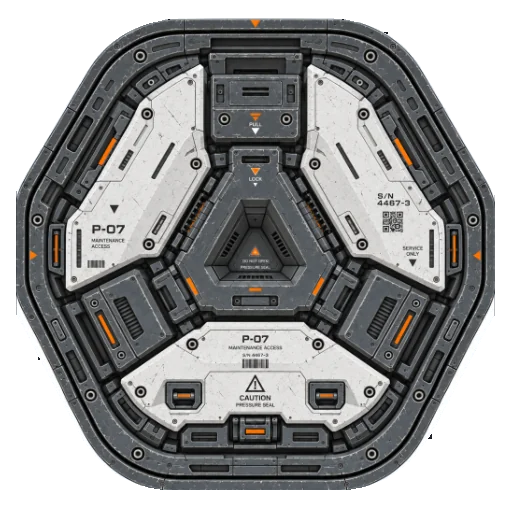
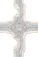

512 × 512 · POM v4
P-07 Maintenance Hatch
Первый контрольный fixture с раздельными коэффициентами выступов и впадин.
Открыть стендПубличные тестовые fixtures для проверки актуального ShipModule POM. Каждый стенд позволяет сравнить обычный PBR и POM в одинаковом ракурсе и настроить профиль рельефа. Модульные швы дополнительно проверяются в бесшовных сборках.

Первый контрольный fixture с раздельными коэффициентами выступов и впадин.
Открыть стендВысокая индустриальная панель с рамой, каналами, крепежом и центральным модулем PULL.
Открыть стендПрямые швы, T/Y/cross/angled junctions и режим автоматической сборки с общим профилем соединения.
Открыть стенд
Десять новых sci-fi panel decals. Runtime-реконструкция Height, Normal и Alpha в 512² с переключением Front / 3/4 / Grazing.
Открыть стенд